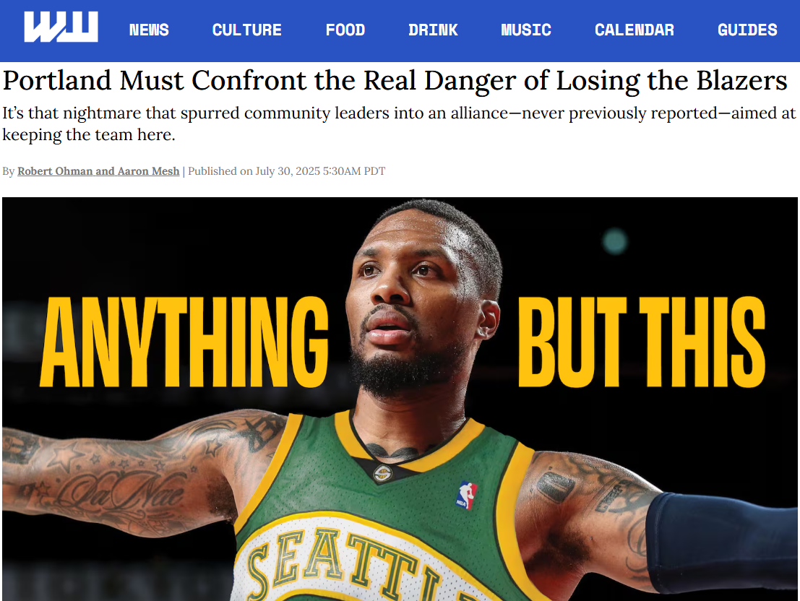

05 — Context
A timeline of the state's funding commitment
In short: this is a dated, sourced chronology of the Blazers' sale and the state's funding push, laid out in order without drawing conclusions about what caused what.
The below headline and photo made the rounds just over a year ago, on July 30, 2025. At the time, the Blazers were for sale, Seattle and Las Vegas weren't part of any expansion conversation yet, and the NBA commissioner had just said the city "likely needs a new arena." Here's the sequence of what happened next. This is intentionally an abbreviated list; a lot happened over these months, but the dates below are the ones most useful for understanding the backdrop against which the state decided to pass SB 1501. I'm not going to connect the dots or speculate, but will just lay out the chain of events to add some background to what was happening during the negotiation.

May 13, 2025: Jody Allen, executor of Paul Allen's estate, begins the process of selling the Trail Blazers. (Willamette Week)
Jul 16, 2025: NBA Commissioner Adam Silver says Portland "likely needs a new arena" to keep the team long-term. (OPB)
Jul 16, 2025: The same day, reporting surfaces on Knicks owner James Dolan's opposition to NBA expansion, suggesting that Seattle and Las Vegas getting expansion teams were no longer a foregone conclusion. Both David Aldridge (The Athletic) and Bill Simmons, whose podcast had first floated the claim weeks earlier, described it as a broader group of owners resisting expansion, with Dolan named as the one leading the effort rather than the sole objector. (Sports Illustrated)
Jul 30, 2025: Willamette Week runs "Anything But This," a cover story on relocation fears. The piece reported that Nike co-founder Phil Knight, the only Oregonian wealthy enough to buy the team outright, had already ruled himself out the day after the team went up for sale, leaving no serious local buyer in contention. It also detailed NBA Commissioner Adam Silver's public comments that Portland "likely needs a new arena," and noted that the Blazers' bridge lease agreement left any new owner with no contractual obligation to keep the team in Portland past 2030. (Willamette Week)
Aug 13, 2025: Tom Dundon reaches a tentative agreement to buy the Blazers. (Sportico)
Sep 12, 2025: Purchase agreement formally signed. (OPB)
Early 2026: State lawmakers begin working on legislation to help fund the Moda Center renovation. The bill drew support from both parties. Senator Ron Wyden was a vocal public advocate throughout, citing his personal relationship with NBA Commissioner Adam Silver and warning against a repeat of Seattle losing the SuperSonics. (KGW, Willamette Week)
Feb–Mar 2026: The funding bill, committing $365M to the renovation, moves out of committee toward a Senate vote. (KGW)
Mar 13, 2026: Adam Silver visits Portland as lawmakers advance the funding bill, his first appearance at a Blazers game since 2023. Asked about the bill's passage during the broadcast, Silver said: "It's a great first step. It's part of why I'm in town today talking to some of the elected officials." (KATU)
Mar 25, 2026: NBA Board of Governors votes to explore, not approve, expansion to Seattle and Las Vegas. (ESPN)
Mar 30, 2026: NBA Board of Governors approves the sale of the Blazers to Tom Dundon's group. (ESPN)
Mar 31, 2026: Oregon's Senate Bill 1501, committing $365M to Moda Center renovations (contingent on a 20-year lease agreement), takes legal effect. The Blazers' sale to Dundon's group also closes the same day. (LegiScan, Sportico)